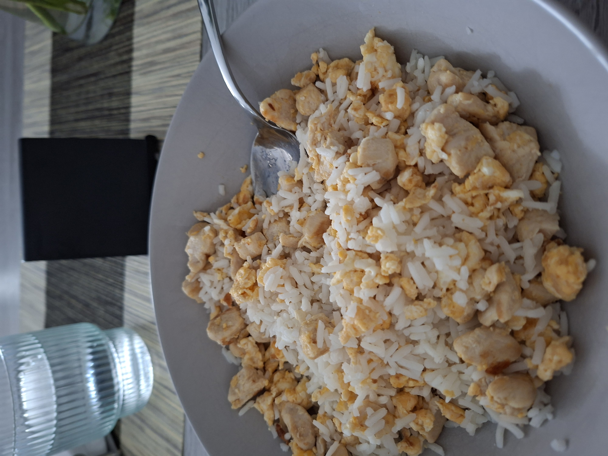
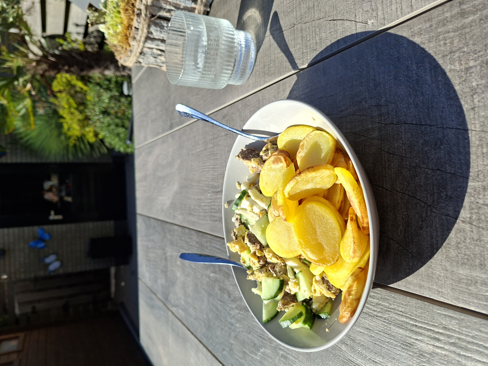
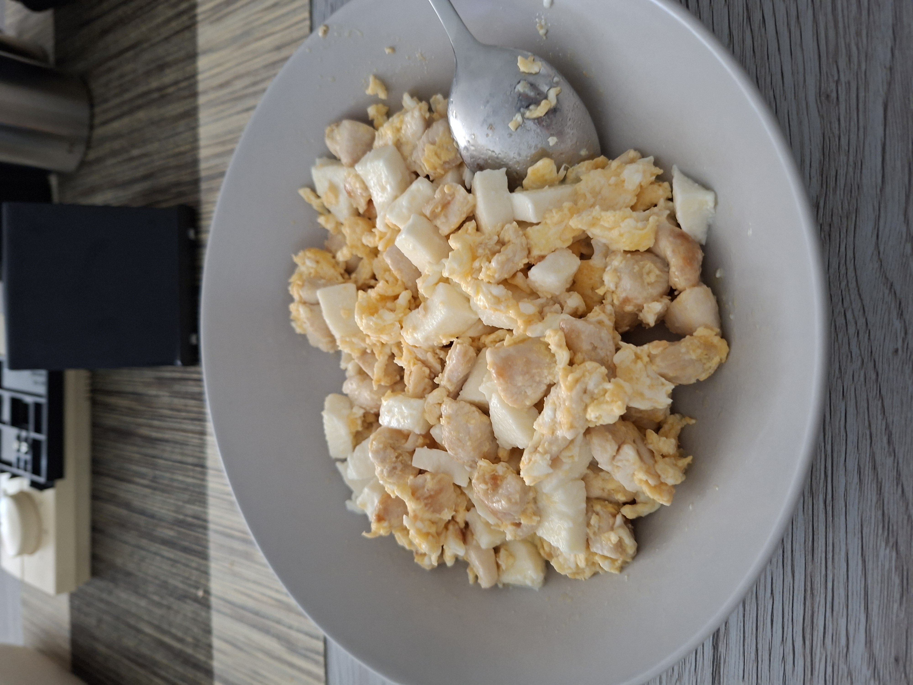

Ook voeding is belangrijk
Een aantal mensen onderschatten wat voor invloed voeding en herstel heeft op je sportprestaties en de opbouw van spiermassa. Of je nou wilt afvallen of aankomen, de meeste sporters zeggen zelfs dat het hun meer tijd en moeite kost om bezig te zijn met het maken en eten van maaltijden, dan de tijd die ze doorbrengen in de sportschool. En daar zit enige kern van waarheid in, want ook in je voeding ga je gedisciplineerd moeten zijn. Wanneer ga je bijvoorbeeld wel of niet eten? Wat ga je eten? Hoeveel ga je eten? Dat zijn allemaal dingen waar je rekening mee moet houden.
Voeding bijhouden
Sommige mensen hebben baat bij het tracken van hun macro's. Dit houdt in dat je voor jezelf op de gram gewogen maaltijden je calorieën, eiwitten, koolhydraten en vezels bijhoudt. Dit kan heel voordelig zijn voor jezelf en kan ik ook aanraden voor beginners. Ik ben al enige tijd bezig dus weet inmiddels ongeveer waar mijn grenzen liggen en hoeveel voeding ik per dag nodig heb. Als beginner kan het zeker helpen om een inzicht te krijgen, dat deed het voor mij ook.
Behoudt de balans
Het is natuurlijk heel logisch; als je gezond bezig bent moet je ook zo gezond mogelijk eten om dit aan te vullen. Zo haal je de beste en snelste resultaten. Ikzelf eet zoveel mogelijk natuurlijke voeding, zoals eieren, rijst, vlees, kip, vis, avocado, aardappelen, etc. Ik doe dit al zo lang dat je lichaam er gewend aan raakt en de drang tot ongezond voedsel minder sterk wordt. Het begin is daarom het lastigst, maar ik zeg daarom ook wel de 80/20 regel. 80% gezonde voeding en 20% minder gezonde voeding. Het moet natuurlijk een beetje te doen zijn, dus af en toe is geen probleem. Zolang je maar wel serieus en consistent bent met je normale dieet.
Hieronder een aantal voorbeelden van mijn maaltijden:


